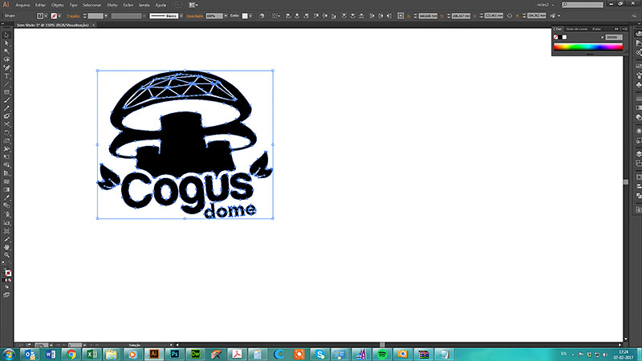

Computer Aided Design
Week 2
Computer Aided Design (CAD)
Tasks
model (raster, vector, 2D, 3D, render, animate, simulate, ...) a possible final project
Publish it through git
Raster/vector work
I started this task by thinking the best way to design my mushroom greenhouse and give it a proper name. I thought about creating animated gifs and image editing to explain better the concept . I decided the product is going to be called CogusDome, give your cogus Box a Home!

I made the logo in Illustrator, with the help of photoshop, and the Live trace tool. I also created an animated gif with the use of Photoshop. It's a multilayer software and it was easy to do it. I followed an online tutorial
Animated GifCreating the Animation in Photoshop
References - Animated Gif's in Photoshop
3D model
I changed the initial shape for my greenhouse prototype. I Talked with Fernando about giving a geodesical dome shape to it, and he liked. I'm going to create a modular dome, that can be disassembled into small parts for easier transportation.
I usually create my 3d models in Autodesk 3D Studio Mask, and for this purpose (renders and animation), i did it all with this software.I used Vray render engine.
Final Render
I'm planning to learn Onshape during Fabacademy so i can create parametric 3d models easier and the possibility to do it online it's great.
References - VRay
Animation
I made the animation in 3D Studio Max. It's a process where tou have an easy interaction between the objects and the timeline. The animation explains how the composite recharge is introduced into the greenhouse drawer.
References - 3D Max Animation ,
GIT
I just had to do the GIT Mantra:
cd ~/Desktop/"yourdirname"/"yourgithubdirname"
git pull
git add .
git status
git commit -m "short description of the changes you made"
git push